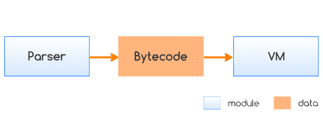

<!DOCTYPE html><html lang="en-us"><head><meta charset="UTF-8"><meta http-equiv="X-UA-Compatible" content="IE=edge,chrome=1"><title>浅谈前端代码加密 | 曜彤.手记</title><meta name="description" content="说到 Web 前端开发，我们首先能够想到的是浏览器、HTML、CSS 以及 JavaScript 这些开发时所必备使用的软件工具和编程语言。而在这个专业领域中，作为开发者我们众所周知的是，所有来自前端的数据都是“不可信”的，由于构成前端业务逻辑和交互界面的所有相关代码都是可以被用户直接查看到的，因此我们无法保证我们所确信的某个从前端传递到后端的数据没有被用户曾经修改过。那么是否有办法可以将前端领域中那些与业务有关的代码（比如数据处理逻辑、验证逻辑等。通常是 JavaScript 代码）进行加密以防止用户进行恶意修改呢？本文我们将讨论这方面的内容。"><meta name="generator" content="曜彤.手记"><meta name="author" content="于航(曜彤)"><meta name="keywords" content="博客, C++, C, VB, Web, Java, IT, 编程, 开发, Android, Python, MySQL, 科技, 黑客, 技术, Javascript, 云, 大数据, 计算, 机器学习, AI, 人工智能, 创业, 产品, 公司, WebAssembly, Wasm"><meta name="HandheldFriendly" content="True"><meta name="MobileOptimized" content="320"><meta name="viewport" content="width=device-width,initial-scale=1.0,maximum-scale=1,user-scalable=0"><link rel="stylesheet" type="text/css" href="/styles/screen.css"><link rel="apple-touch-icon" sizes="57x57" href="/images/apple-touch-icon-57x57.jpg"><link rel="apple-touch-icon" sizes="60x60" href="/images/apple-touch-icon-60x60.jpg"><link rel="apple-touch-icon" sizes="72x72" href="/images/apple-touch-icon-72x72.jpg"><link rel="apple-touch-icon" sizes="76x76" href="/images/apple-touch-icon-76x76.jpg"><link rel="apple-touch-icon" sizes="114x114" href="/images/apple-touch-icon-114x114.jpg"><link rel="apple-touch-icon" sizes="120x120" href="/images/apple-touch-icon-120x120.jpg"><link rel="apple-touch-icon" sizes="144x144" href="/images/apple-touch-icon-144x144.jpg"><link rel="apple-touch-icon" sizes="152x152" href="/images/apple-touch-icon-152x152.jpg"><link rel="apple-touch-icon" sizes="196x196" href="/images/apple-touch-icon-196x196.jpg"><link rel="apple-touch-icon" sizes="310x310" href="/images/apple-touch-icon-310x310.jpg"><link href="/images/splash/iphone5_splash.png" media="(device-width: 320px) and (device-height: 568px) and (-webkit-device-pixel-ratio: 2)" rel="apple-touch-startup-image"><link href="/images/splash/iphone6_splash.png" media="(device-width: 375px) and (device-height: 667px) and (-webkit-device-pixel-ratio: 2)" rel="apple-touch-startup-image"><link href="/images/splash/iphoneplus_splash.png" media="(device-width: 621px) and (device-height: 1104px) and (-webkit-device-pixel-ratio: 3)" rel="apple-touch-startup-image"><link href="/images/splash/iphonex_splash.png" media="(device-width: 375px) and (device-height: 812px) and (-webkit-device-pixel-ratio: 3)" rel="apple-touch-startup-image"><link href="/images/splash/iphonexr_splash.png" media="(device-width: 414px) and (device-height: 896px) and (-webkit-device-pixel-ratio: 2)" rel="apple-touch-startup-image"><link href="/images/splash/iphonexsmax_splash.png" media="(device-width: 414px) and (device-height: 896px) and (-webkit-device-pixel-ratio: 3)" rel="apple-touch-startup-image"><link href="/images/splash/ipad_splash.png" media="(device-width: 768px) and (device-height: 1024px) and (-webkit-device-pixel-ratio: 2)" rel="apple-touch-startup-image"><link href="/images/splash/ipadpro1_splash.png" media="(device-width: 834px) and (device-height: 1112px) and (-webkit-device-pixel-ratio: 2)" rel="apple-touch-startup-image"><link href="/images/splash/ipadpro3_splash.png" media="(device-width: 834px) and (device-height: 1194px) and (-webkit-device-pixel-ratio: 2)" rel="apple-touch-startup-image"><link href="/images/splash/ipadpro2_splash.png" media="(device-width: 1024px) and (device-height: 1366px) and (-webkit-device-pixel-ratio: 2)" rel="apple-touch-startup-image"><link rel="icon" type="image/png" sizes="16x16" href="/images/favicon-16x16.png"><link rel="icon" type="image/png" sizes="32x32" href="/images/favicon-32x32.png"><link rel="icon" type="image/png" sizes="96x96" href="/images/favicon-96x96.png"><link rel="icon" type="image/png" sizes="128x128" href="/images/favicon-128.png"><link rel="icon" type="image/png" sizes="196x196" href="/images/favicon-196x196.png"><meta name="msapplication-TileColor" content="#FFFFFF"><meta name="msapplication-TileImage" content="mstile-144x144.png"><meta name="msapplication-square70x70logo" content="mstile-70x70.png"><meta name="msapplication-square150x150logo" content="mstile-150x150.png"><meta name="msapplication-wide310x150logo" content="mstile-310x150.png"><meta name="msapplication-square310x310logo" content="mstile-310x310.png"><meta name="msapplication-square310x310logo" content="mstile-310x310.png"><link rel="manifest" href="/manifest.webmanifest"><link rel="alternate" type="application/atom+xml" title="Atom 0.3" href="/atom.xml"><link rel="stylesheet" href="/css/prism-okaidia.css" type="text/css">
<link rel="stylesheet" href="/css/prism-line-numbers.css" type="text/css"></head><body itemscope itemtype="https://schema.org/WebPage"><div class="canvas-containter"><span>X</span></div><header itemscope itemtype="https://schema.org/WPHeader"><div class="logo"></div><h1 class="title"><a href="/" alt="曜彤.手记" title="曜彤.手记" itemprop="headline">曜彤.手记</a><a title="Atom 0.3" target="__blank" href="/atom.xml" class="rss"></a></h1><p itemprop="description" class="description">随记，关于互联网技术、产品与创业</p><nav itemscope itemtype="https://schema.org/SiteNavigationElement"><ul><li itemprop="name" class="menu-item"><a href="/ " alt="首页" title="首页" itemprop="url">首页</a></li><li itemprop="name" class="menu-item"><a href="/articles" alt="文章" title="文章" itemprop="url">文章</a></li><li itemprop="name" class="menu-item"><a href="/works" alt="作品" title="作品" itemprop="url">作品</a></li><li itemprop="name" class="menu-item"><a href="/readings" alt="阅读" title="阅读" itemprop="url">阅读</a></li><li itemprop="name" class="menu-item"><a href="/tags" alt="标签" title="标签" itemprop="url">标签</a></li><li itemprop="name" class="menu-item"><a href="/author" alt="关于" title="关于" itemprop="url">关于</a></li></ul></nav><p class="meta-icp"><a target="_blank" href="https://beian.miit.gov.cn/"><span>吉 ICP 备10004938号</span></a></p><div class="space"></div></header><main itemscope itemtype="https://schema.org/Blog"><script src="https://shadow.elemecdn.com/npm/zoomage.js@latest/dist/zoomage.min.js" type="text/javascript"></script><script src="https://shadow.elemecdn.com/npm/axios@0.18.0/dist/axios.min.js" type="text/javascript"></script><script src="/scripts/post.js" type="text/javascript"></script><div class="touch-top"><span></span></div><article post-id="07a1cba17827747424a063b4f9b69d4d" class="full"><h1 itemprop="headline" class="post-heading">浅谈前端代码加密</h1><div class="article-meta"><span class="post-meta"><br>Created on<time itemprop="dateCreated" datetime="2019-04-10T08:58:34.000Z"> 2019 / 04 / 10, 16:58:34</time></span><span class="page-tag-anchor"><a href="/tags/前端" itemprop="url">#前端</a>&nbsp;&nbsp;<a href="/tags/加密" itemprop="url">#加密</a>&nbsp;&nbsp;</span></div><br><p>说到 Web 前端开发，我们首先能够想到的是浏览器、HTML、CSS 以及 JavaScript 这些开发时所必备使用的软件工具和编程语言。而在这个专业领域中，作为开发者我们众所周知的是，所有来自前端的数据都是“不可信”的，由于构成前端业务逻辑和交互界面的所有相关代码都是可以被用户直接查看到的，因此我们无法保证我们所确信的某个从前端传递到后端的数据没有被用户曾经修改过。那么是否有办法可以将前端领域中那些与业务有关的代码（比如数据处理逻辑、验证逻辑等。通常是 JavaScript 代码）进行加密以防止用户进行恶意修改呢？本文我们将讨论这方面的内容。</p>
<p>提到“加密”，我们自然会想到众多与“对称加密”、“非对称加密”以及“散列加密”相关的算法，比如 AWS 算法、RSA 算法与 MD5 算法等。在传统的 B-S 架构下，前端通过公钥进行加密处理的数据可以在后端服务器再通过相应私钥进行解密来得到原始数据，但是对于前端的业务代码而言，由于浏览器本身无法识别运行这些被加密过的源代码，因此实际上传统的加密算法并不能帮助我们解决“如何<strong>完全黑盒化前端业务逻辑代码</strong>”这一问题。既然无法完全隐藏前端业务逻辑代码的实际执行细节，那我们就从另一条路以“降低代码可读性”的方式来“<strong>伪黑盒化前端业务逻辑代码</strong>”。通常的方法有如下几种：</p>
<h4 id="第三方插件"><a href="#第三方插件" class="headerlink" title="第三方插件"></a>第三方插件</h4><p>我们所熟知的可用在 Web 前端开发中的第三方插件主要有：Adobe Flash、Java Applet 以及 Silverlight 等。由于历史原因这里我们不会深入介绍基于这些第三方插件的前端业务代码加密方案。其中 Adobe 将于2020年完全停止对 Flash 技术的支持，Chrome、Edge 等浏览器也开始逐渐对使用了 Flash 程序的 Web 页面进行阻止或弹出相应的警告。同样的，来自微软的 Silverlight5 也会在2021年停止维护，并完全终止后续新版本功能的开发。而 Java Applet 虽然还可以继续使用，但相较于早期上世纪90年代末，现在已然很少有人使用（不完全统计）。并且需要基于 JRE 来运行也使得 Applet 应用的运行成本大大提高。</p>
<h4 id="代码混淆"><a href="#代码混淆" class="headerlink" title="代码混淆"></a>代码混淆</h4><p>在现代前端开发过程中，我们最常用的一种可以“降低源代码可读性”的方法就是使用“代码混淆”。<strong>通常意义</strong>上的代码混淆可以压缩原始 ASCII 代码的体积并将其中的诸如：变量、常量名用简短的毫无意义的标识符进行代替，这一步可以简单的理解为“去语义化”。以我们最常用的 “Uglify” 和 “GCC (Google Closure Compiler)” 为例，首先是一段未经代码混淆的原始 ECMAScript5 源代码：</p>
<pre class="line-numbers language-javascript"><code class="language-javascript"><span class="token keyword">let</span> times <span class="token operator">=</span> <span class="token number">0.1</span> <span class="token operator">*</span> <span class="token number">8</span> <span class="token operator">+</span> <span class="token number">1</span><span class="token punctuation">;</span>
<span class="token keyword">function</span> <span class="token function">getExtra</span><span class="token punctuation">(</span>n<span class="token punctuation">)</span> <span class="token punctuation">{</span>
    <span class="token keyword">return</span> <span class="token punctuation">[</span><span class="token number">1</span><span class="token punctuation">,</span> <span class="token number">4</span><span class="token punctuation">,</span> <span class="token number">6</span><span class="token punctuation">]</span><span class="token punctuation">.</span><span class="token function">map</span><span class="token punctuation">(</span><span class="token keyword">function</span><span class="token punctuation">(</span>i<span class="token punctuation">)</span> <span class="token punctuation">{</span>
      <span class="token keyword">return</span> i <span class="token operator">*</span> n<span class="token punctuation">;</span>
  <span class="token punctuation">}</span><span class="token punctuation">)</span><span class="token punctuation">;</span>
<span class="token punctuation">}</span>
<span class="token keyword">var</span> arr <span class="token operator">=</span> <span class="token punctuation">[</span><span class="token number">8</span><span class="token punctuation">,</span> <span class="token number">94</span><span class="token punctuation">,</span> <span class="token number">15</span><span class="token punctuation">,</span> <span class="token number">88</span><span class="token punctuation">,</span> <span class="token number">55</span><span class="token punctuation">,</span> <span class="token number">76</span><span class="token punctuation">,</span> <span class="token number">21</span><span class="token punctuation">,</span> <span class="token number">39</span><span class="token punctuation">]</span><span class="token punctuation">;</span>
arr <span class="token operator">=</span> <span class="token function">getExtra</span><span class="token punctuation">(</span>times<span class="token punctuation">)</span><span class="token punctuation">.</span><span class="token function">concat</span><span class="token punctuation">(</span>arr<span class="token punctuation">.</span><span class="token function">map</span><span class="token punctuation">(</span><span class="token keyword">function</span><span class="token punctuation">(</span>item<span class="token punctuation">)</span> <span class="token punctuation">{</span>
  <span class="token keyword">return</span> item <span class="token operator">*</span> <span class="token number">2</span><span class="token punctuation">;</span>
<span class="token punctuation">}</span><span class="token punctuation">)</span><span class="token punctuation">)</span><span class="token punctuation">;</span>
<span class="token keyword">function</span> <span class="token function">sortarr</span><span class="token punctuation">(</span>arr<span class="token punctuation">)</span> <span class="token punctuation">{</span>
  <span class="token keyword">for</span><span class="token punctuation">(</span>i <span class="token operator">=</span> <span class="token number">0</span><span class="token punctuation">;</span> i <span class="token operator">&lt;</span> arr<span class="token punctuation">.</span>length <span class="token operator">-</span> <span class="token number">1</span><span class="token punctuation">;</span> i<span class="token operator">++</span><span class="token punctuation">)</span> <span class="token punctuation">{</span>
    <span class="token keyword">for</span><span class="token punctuation">(</span>j <span class="token operator">=</span> <span class="token number">0</span><span class="token punctuation">;</span> j <span class="token operator">&lt;</span> arr<span class="token punctuation">.</span>length <span class="token operator">-</span> <span class="token number">1</span> <span class="token operator">-</span> i<span class="token punctuation">;</span> j<span class="token operator">++</span><span class="token punctuation">)</span> <span class="token punctuation">{</span>
      <span class="token keyword">if</span><span class="token punctuation">(</span>arr<span class="token punctuation">[</span>j<span class="token punctuation">]</span> <span class="token operator">></span> arr<span class="token punctuation">[</span>j <span class="token operator">+</span> <span class="token number">1</span><span class="token punctuation">]</span><span class="token punctuation">)</span> <span class="token punctuation">{</span>
        <span class="token keyword">var</span> temp <span class="token operator">=</span> arr<span class="token punctuation">[</span>j<span class="token punctuation">]</span><span class="token punctuation">;</span>
        arr<span class="token punctuation">[</span>j<span class="token punctuation">]</span> <span class="token operator">=</span> arr<span class="token punctuation">[</span>j <span class="token operator">+</span> <span class="token number">1</span><span class="token punctuation">]</span><span class="token punctuation">;</span>
        arr<span class="token punctuation">[</span>j <span class="token operator">+</span> <span class="token number">1</span><span class="token punctuation">]</span> <span class="token operator">=</span> temp<span class="token punctuation">;</span>
      <span class="token punctuation">}</span>
    <span class="token punctuation">}</span>
  <span class="token punctuation">}</span>
  <span class="token keyword">return</span> arr<span class="token punctuation">;</span>
<span class="token punctuation">}</span>
console<span class="token punctuation">.</span><span class="token function">log</span><span class="token punctuation">(</span><span class="token function">sortarr</span><span class="token punctuation">(</span>arr<span class="token punctuation">)</span><span class="token punctuation">)</span><span class="token punctuation">;</span><span aria-hidden="true" class="line-numbers-rows"><span></span><span></span><span></span><span></span><span></span><span></span><span></span><span></span><span></span><span></span><span></span><span></span><span></span><span></span><span></span><span></span><span></span><span></span><span></span><span></span><span></span><span></span><span></span></span></code></pre>
<p>经过 UglifyJS3 的代码压缩混淆处理后的结果：</p>
<pre class="line-numbers language-javascript"><code class="language-javascript"><span class="token keyword">let</span> times<span class="token operator">=</span><span class="token number">1.8</span><span class="token punctuation">;</span><span class="token keyword">function</span> <span class="token function">getExtra</span><span class="token punctuation">(</span>r<span class="token punctuation">)</span><span class="token punctuation">{</span><span class="token keyword">return</span><span class="token punctuation">[</span><span class="token number">1</span><span class="token punctuation">,</span><span class="token number">4</span><span class="token punctuation">,</span><span class="token number">6</span><span class="token punctuation">]</span><span class="token punctuation">.</span><span class="token function">map</span><span class="token punctuation">(</span><span class="token keyword">function</span><span class="token punctuation">(</span>t<span class="token punctuation">)</span><span class="token punctuation">{</span><span class="token keyword">return</span> t<span class="token operator">*</span>r<span class="token punctuation">}</span><span class="token punctuation">)</span><span class="token punctuation">}</span><span class="token keyword">var</span> arr<span class="token operator">=</span><span class="token punctuation">[</span><span class="token number">8</span><span class="token punctuation">,</span><span class="token number">94</span><span class="token punctuation">,</span><span class="token number">15</span><span class="token punctuation">,</span><span class="token number">88</span><span class="token punctuation">,</span><span class="token number">55</span><span class="token punctuation">,</span><span class="token number">76</span><span class="token punctuation">,</span><span class="token number">21</span><span class="token punctuation">,</span><span class="token number">39</span><span class="token punctuation">]</span><span class="token punctuation">;</span><span class="token keyword">function</span> <span class="token function">sortarr</span><span class="token punctuation">(</span>r<span class="token punctuation">)</span><span class="token punctuation">{</span><span class="token keyword">for</span><span class="token punctuation">(</span>i<span class="token operator">=</span><span class="token number">0</span><span class="token punctuation">;</span>i<span class="token operator">&lt;</span>r<span class="token punctuation">.</span>length<span class="token number">-1</span><span class="token punctuation">;</span>i<span class="token operator">++</span><span class="token punctuation">)</span><span class="token keyword">for</span><span class="token punctuation">(</span>j<span class="token operator">=</span><span class="token number">0</span><span class="token punctuation">;</span>j<span class="token operator">&lt;</span>r<span class="token punctuation">.</span>length<span class="token number">-1</span><span class="token operator">-</span>i<span class="token punctuation">;</span>j<span class="token operator">++</span><span class="token punctuation">)</span><span class="token keyword">if</span><span class="token punctuation">(</span>r<span class="token punctuation">[</span>j<span class="token punctuation">]</span><span class="token operator">></span>r<span class="token punctuation">[</span>j<span class="token operator">+</span><span class="token number">1</span><span class="token punctuation">]</span><span class="token punctuation">)</span><span class="token punctuation">{</span><span class="token keyword">var</span> t<span class="token operator">=</span>r<span class="token punctuation">[</span>j<span class="token punctuation">]</span><span class="token punctuation">;</span>r<span class="token punctuation">[</span>j<span class="token punctuation">]</span><span class="token operator">=</span>r<span class="token punctuation">[</span>j<span class="token operator">+</span><span class="token number">1</span><span class="token punctuation">]</span><span class="token punctuation">,</span>r<span class="token punctuation">[</span>j<span class="token operator">+</span><span class="token number">1</span><span class="token punctuation">]</span><span class="token operator">=</span>t<span class="token punctuation">}</span><span class="token keyword">return</span> r<span class="token punctuation">}</span>arr<span class="token operator">=</span><span class="token function">getExtra</span><span class="token punctuation">(</span>times<span class="token punctuation">)</span><span class="token punctuation">.</span><span class="token function">concat</span><span class="token punctuation">(</span>arr<span class="token punctuation">.</span><span class="token function">map</span><span class="token punctuation">(</span><span class="token keyword">function</span><span class="token punctuation">(</span>r<span class="token punctuation">)</span><span class="token punctuation">{</span><span class="token keyword">return</span> <span class="token number">2</span><span class="token operator">*</span>r<span class="token punctuation">}</span><span class="token punctuation">)</span><span class="token punctuation">)</span><span class="token punctuation">,</span>console<span class="token punctuation">.</span><span class="token function">log</span><span class="token punctuation">(</span><span class="token function">sortarr</span><span class="token punctuation">(</span>arr<span class="token punctuation">)</span><span class="token punctuation">)</span><span class="token punctuation">;</span><span aria-hidden="true" class="line-numbers-rows"><span></span></span></code></pre>
<p>经过 Google Closure Compiler 的代码压缩混淆处理后的结果：</p>
<pre class="line-numbers language-javascript"><code class="language-javascript"><span class="token keyword">var</span> b<span class="token operator">=</span><span class="token punctuation">[</span><span class="token number">8</span><span class="token punctuation">,</span><span class="token number">94</span><span class="token punctuation">,</span><span class="token number">15</span><span class="token punctuation">,</span><span class="token number">88</span><span class="token punctuation">,</span><span class="token number">55</span><span class="token punctuation">,</span><span class="token number">76</span><span class="token punctuation">,</span><span class="token number">21</span><span class="token punctuation">,</span><span class="token number">39</span><span class="token punctuation">]</span><span class="token punctuation">;</span>b<span class="token operator">=</span><span class="token keyword">function</span><span class="token punctuation">(</span>a<span class="token punctuation">)</span><span class="token punctuation">{</span><span class="token keyword">return</span><span class="token punctuation">[</span><span class="token number">1</span><span class="token punctuation">,</span><span class="token number">4</span><span class="token punctuation">,</span><span class="token number">6</span><span class="token punctuation">]</span><span class="token punctuation">.</span><span class="token function">map</span><span class="token punctuation">(</span><span class="token keyword">function</span><span class="token punctuation">(</span>c<span class="token punctuation">)</span><span class="token punctuation">{</span><span class="token keyword">return</span> c<span class="token operator">*</span>a<span class="token punctuation">}</span><span class="token punctuation">)</span><span class="token punctuation">}</span><span class="token punctuation">(</span><span class="token number">1.8</span><span class="token punctuation">)</span><span class="token punctuation">.</span><span class="token function">concat</span><span class="token punctuation">(</span>b<span class="token punctuation">.</span><span class="token function">map</span><span class="token punctuation">(</span><span class="token keyword">function</span><span class="token punctuation">(</span>a<span class="token punctuation">)</span><span class="token punctuation">{</span><span class="token keyword">return</span> <span class="token number">2</span><span class="token operator">*</span>a<span class="token punctuation">}</span><span class="token punctuation">)</span><span class="token punctuation">)</span><span class="token punctuation">;</span>console<span class="token punctuation">.</span><span class="token function">log</span><span class="token punctuation">(</span><span class="token keyword">function</span><span class="token punctuation">(</span>a<span class="token punctuation">)</span><span class="token punctuation">{</span><span class="token keyword">for</span><span class="token punctuation">(</span>i<span class="token operator">=</span><span class="token number">0</span><span class="token punctuation">;</span>i<span class="token operator">&lt;</span>a<span class="token punctuation">.</span>length<span class="token number">-1</span><span class="token punctuation">;</span>i<span class="token operator">++</span><span class="token punctuation">)</span><span class="token keyword">for</span><span class="token punctuation">(</span>j<span class="token operator">=</span><span class="token number">0</span><span class="token punctuation">;</span>j<span class="token operator">&lt;</span>a<span class="token punctuation">.</span>length<span class="token number">-1</span><span class="token operator">-</span>i<span class="token punctuation">;</span>j<span class="token operator">++</span><span class="token punctuation">)</span><span class="token keyword">if</span><span class="token punctuation">(</span>a<span class="token punctuation">[</span>j<span class="token punctuation">]</span><span class="token operator">></span>a<span class="token punctuation">[</span>j<span class="token operator">+</span><span class="token number">1</span><span class="token punctuation">]</span><span class="token punctuation">)</span><span class="token punctuation">{</span><span class="token keyword">var</span> c<span class="token operator">=</span>a<span class="token punctuation">[</span>j<span class="token punctuation">]</span><span class="token punctuation">;</span>a<span class="token punctuation">[</span>j<span class="token punctuation">]</span><span class="token operator">=</span>a<span class="token punctuation">[</span>j<span class="token operator">+</span><span class="token number">1</span><span class="token punctuation">]</span><span class="token punctuation">;</span>a<span class="token punctuation">[</span>j<span class="token operator">+</span><span class="token number">1</span><span class="token punctuation">]</span><span class="token operator">=</span>c<span class="token punctuation">}</span><span class="token keyword">return</span> a<span class="token punctuation">}</span><span class="token punctuation">(</span>b<span class="token punctuation">)</span><span class="token punctuation">)</span><span class="token punctuation">;</span><span aria-hidden="true" class="line-numbers-rows"><span></span></span></code></pre>
<p>对比上述两种工具的代码混淆压缩结果我们可以看到，UglifyJS 不会对原始代码进行“重写”，所有的压缩工作都是在代码原有结构的基础上进行的优化。而 GCC 对代码的优化则更靠近“编译器”，除了常见的变量、常量名去语义化外，还使用了常见的 DCE 优化策略，比如对常量表达式（constexpr）进行提前求值（0.1 * 8 + 1）、通过 “inline” 减少中间变量的使用等等。</p>
<p>UglifyJS 在处理优化 JavaScript 源代码时都是以其 AST 的形式进行分析的。比如在 Node.js 脚本中进行源码处理时，我们通常会首先使用 <code>UglifyJS.parse</code> 方法将一段 JavaScript 代码转换成其对应的 AST 形式，然后再通过 <code>UglifyJS.Compressor</code> 方法对这些 AST 进行处理。最后还需要通过 <code>print_to_string</code> 方法将处理后的 AST 结构转换成相应的 ASCII 可读代码形式。UglifyJS.Compressor 的本质是一个官方封装好的 “TreeTransformer” 类型，其内部已经封装好了众多常用的代码优化策略，而通过对 <code>UglifyJS.TreeTransformer</code> 进行适当的封装，我们也可以编写自己的代码优化器。如下所示我们编写了一个实现简单“常量传播”与“常量折叠”（注意这里其实是变量，但优化形式同 C++ 中的这两种基本优化策略相同）优化的 UglifyJS 转化器。</p>
<pre class="line-numbers language-javascript"><code class="language-javascript"><span class="token keyword">const</span> UglifyJS <span class="token operator">=</span> <span class="token function">require</span><span class="token punctuation">(</span><span class="token string">'uglify-js'</span><span class="token punctuation">)</span><span class="token punctuation">;</span>

<span class="token keyword">var</span> symbolTable <span class="token operator">=</span> <span class="token punctuation">{</span><span class="token punctuation">}</span><span class="token punctuation">;</span>
<span class="token keyword">var</span> binaryOperations <span class="token operator">=</span> <span class="token punctuation">{</span>
  <span class="token string">"+"</span><span class="token punctuation">:</span> <span class="token punctuation">(</span>x<span class="token punctuation">,</span> y<span class="token punctuation">)</span> <span class="token operator">=</span><span class="token operator">></span> x <span class="token operator">+</span> y<span class="token punctuation">,</span>
  <span class="token string">"-"</span><span class="token punctuation">:</span> <span class="token punctuation">(</span>x<span class="token punctuation">,</span> y<span class="token punctuation">)</span> <span class="token operator">=</span><span class="token operator">></span> x <span class="token operator">-</span> y<span class="token punctuation">,</span>
  <span class="token string">"*"</span><span class="token punctuation">:</span> <span class="token punctuation">(</span>x<span class="token punctuation">,</span> y<span class="token punctuation">)</span> <span class="token operator">=</span><span class="token operator">></span> x <span class="token operator">*</span> y
<span class="token punctuation">}</span>
<span class="token keyword">var</span> constexpr <span class="token operator">=</span> <span class="token keyword">new</span> <span class="token class-name">UglifyJS<span class="token punctuation">.</span>TreeTransformer</span><span class="token punctuation">(</span><span class="token keyword">null</span><span class="token punctuation">,</span> <span class="token keyword">function</span><span class="token punctuation">(</span>node<span class="token punctuation">)</span> <span class="token punctuation">{</span>
  <span class="token keyword">if</span> <span class="token punctuation">(</span>node <span class="token keyword">instanceof</span> <span class="token class-name">UglifyJS<span class="token punctuation">.</span>AST_Binary</span><span class="token punctuation">)</span> <span class="token punctuation">{</span>
    <span class="token keyword">if</span> <span class="token punctuation">(</span>Number<span class="token punctuation">.</span><span class="token function">isInteger</span><span class="token punctuation">(</span>node<span class="token punctuation">.</span>left<span class="token punctuation">.</span>value<span class="token punctuation">)</span> <span class="token operator">&amp;&amp;</span> Number<span class="token punctuation">.</span><span class="token function">isInteger</span><span class="token punctuation">(</span>node<span class="token punctuation">.</span>right<span class="token punctuation">.</span>value<span class="token punctuation">)</span><span class="token punctuation">)</span> <span class="token punctuation">{</span>
      <span class="token keyword">return</span> <span class="token keyword">new</span> <span class="token class-name">UglifyJS<span class="token punctuation">.</span>AST_Number</span><span class="token punctuation">(</span><span class="token punctuation">{</span>
        value<span class="token punctuation">:</span> binaryOperations<span class="token punctuation">[</span>node<span class="token punctuation">.</span>operator<span class="token punctuation">]</span><span class="token punctuation">.</span><span class="token function">call</span><span class="token punctuation">(</span><span class="token keyword">this</span><span class="token punctuation">,</span> 
          <span class="token function">Number</span><span class="token punctuation">(</span>node<span class="token punctuation">.</span>left<span class="token punctuation">.</span>value<span class="token punctuation">)</span><span class="token punctuation">,</span> 
          <span class="token function">Number</span><span class="token punctuation">(</span>node<span class="token punctuation">.</span>right<span class="token punctuation">.</span>value<span class="token punctuation">)</span><span class="token punctuation">)</span>
      <span class="token punctuation">}</span><span class="token punctuation">)</span><span class="token punctuation">;</span>
    <span class="token punctuation">}</span> <span class="token keyword">else</span> <span class="token punctuation">{</span>
      <span class="token keyword">return</span> <span class="token keyword">new</span> <span class="token class-name">UglifyJS<span class="token punctuation">.</span>AST_Number</span><span class="token punctuation">(</span><span class="token punctuation">{</span>
        value<span class="token punctuation">:</span> binaryOperations<span class="token punctuation">[</span>node<span class="token punctuation">.</span>operator<span class="token punctuation">]</span><span class="token punctuation">.</span><span class="token function">call</span><span class="token punctuation">(</span><span class="token keyword">this</span><span class="token punctuation">,</span> 
          <span class="token function">Number</span><span class="token punctuation">(</span>symbolTable<span class="token punctuation">[</span>node<span class="token punctuation">.</span>left<span class="token punctuation">.</span>name<span class="token punctuation">]</span><span class="token punctuation">.</span>value<span class="token punctuation">)</span><span class="token punctuation">,</span> 
          <span class="token function">Number</span><span class="token punctuation">(</span>symbolTable<span class="token punctuation">[</span>node<span class="token punctuation">.</span>right<span class="token punctuation">.</span>name<span class="token punctuation">]</span><span class="token punctuation">.</span>value<span class="token punctuation">)</span><span class="token punctuation">)</span>
      <span class="token punctuation">}</span><span class="token punctuation">)</span>
    <span class="token punctuation">}</span>
  <span class="token punctuation">}</span>

  <span class="token keyword">if</span> <span class="token punctuation">(</span>node <span class="token keyword">instanceof</span> <span class="token class-name">UglifyJS<span class="token punctuation">.</span>AST_VarDef</span><span class="token punctuation">)</span> <span class="token punctuation">{</span>
    <span class="token comment" spellcheck="true">// AST_VarDef -> AST_SymbolVar;</span>
    <span class="token comment" spellcheck="true">// 通过符号表来存储已求值的变量值（UglifyJS.AST_Number）引用；</span>
    symbolTable<span class="token punctuation">[</span>node<span class="token punctuation">.</span>name<span class="token punctuation">.</span>name<span class="token punctuation">]</span> <span class="token operator">=</span> node<span class="token punctuation">.</span>value<span class="token punctuation">;</span>
  <span class="token punctuation">}</span>
<span class="token punctuation">}</span><span class="token punctuation">)</span><span class="token punctuation">;</span>

<span class="token keyword">var</span> ast <span class="token operator">=</span> UglifyJS<span class="token punctuation">.</span><span class="token function">parse</span><span class="token punctuation">(</span><span class="token template-string"><span class="token string">`
  var x = 10 * 2 + 6;
  var y = 4 - 1 * 100;
  console.log(x + y);
`</span></span><span class="token punctuation">)</span><span class="token punctuation">;</span>

<span class="token comment" spellcheck="true">// transform and print;</span>
ast<span class="token punctuation">.</span><span class="token function">transform</span><span class="token punctuation">(</span>constexpr<span class="token punctuation">)</span><span class="token punctuation">;</span>
console<span class="token punctuation">.</span><span class="token function">log</span><span class="token punctuation">(</span>ast<span class="token punctuation">.</span><span class="token function">print_to_string</span><span class="token punctuation">(</span><span class="token punctuation">)</span><span class="token punctuation">)</span><span class="token punctuation">;</span>

<span class="token comment" spellcheck="true">// output: </span>
<span class="token comment" spellcheck="true">// var x=26;var y=-96;console.log(-70);</span><span aria-hidden="true" class="line-numbers-rows"><span></span><span></span><span></span><span></span><span></span><span></span><span></span><span></span><span></span><span></span><span></span><span></span><span></span><span></span><span></span><span></span><span></span><span></span><span></span><span></span><span></span><span></span><span></span><span></span><span></span><span></span><span></span><span></span><span></span><span></span><span></span><span></span><span></span><span></span><span></span><span></span><span></span><span></span><span></span><span></span><span></span><span></span><span></span><span></span></span></code></pre>
<p>这里我们通过识别特定的 Uglify AST 节点类型（UglifyJS.AST_Binary / UglifyJS.AST_VarDef）来达到对代码进行精准处理的目的。可以看到，变量 <code>x</code> 和 <code>y</code> 的值在代码处理过程中被提前计算。不仅如此，其作为变量的值还被传递到了表达式 <code>a + b</code> 中，此时如果能够再结合简单的 DCE 策略便可以完成最初级的代码优化效果。类似的，其实通过 Babel 的 <a href="https://www.npmjs.com/package/@babel/traverse" target="_blank" rel="noopener"><code>@babel/traverse</code></a> 插件，我们也可以实现同样的效果，其所基于的原理也都大同小异，即对代码的 AST 进行相应的转换和处理。</p>
<h4 id="WebAssembly"><a href="#WebAssembly" class="headerlink" title="WebAssembly"></a>WebAssembly</h4><p>关于 Wasm 的基本介绍，这里我们不再多谈。那么到底应该如何利用 Wasm 的“字节码”特性来做到尽可能地做到“降低 JavaScript 代码可读性”这一目的呢？一个简单的 JavaScript 代码“加密”服务系统架构图如下所示：</p>
<p></p>
<p>这里整个系统分为两个处理阶段：</p>
<ul>
<li>第一阶段：先将明文的 JavaScript 代码转换为基于特定 JavaScript 引擎（VM）的 OpCode 代码，这些二进制的 OpCode 代码会再通过诸如 Base64 等算法的处理而转换为经过编码的明文 ASCII 字符串格式；</li>
<li>第二阶段：将上述经过编码的 ASCII 字符串连同对应的 JavaScript 引擎内核代码统一编译成完整的 ASM / Wasm 模块。当模块在网页中加载时，内嵌的 JavaScript 引擎便会直接解释执行硬编码在模块中的、经过编码处理的 OpCode 代码；</li>
</ul>
<p>比如我们以下面这段处于 Top-Level 层的 JavaScript 代码为例：</p>
<pre class="line-numbers language-javascript"><code class="language-javascript"><span class="token punctuation">[</span><span class="token number">1</span><span class="token punctuation">,</span> <span class="token number">2</span><span class="token punctuation">,</span> <span class="token number">3</span><span class="token punctuation">,</span> <span class="token number">5</span><span class="token punctuation">,</span> <span class="token number">6</span><span class="token punctuation">,</span> <span class="token number">7</span><span class="token punctuation">,</span> <span class="token number">8</span><span class="token punctuation">,</span> <span class="token number">9</span><span class="token punctuation">]</span><span class="token punctuation">.</span><span class="token function">map</span><span class="token punctuation">(</span><span class="token keyword">function</span><span class="token punctuation">(</span>i<span class="token punctuation">)</span> <span class="token punctuation">{</span>
  <span class="token keyword">return</span> i <span class="token operator">*</span> <span class="token number">2</span><span class="token punctuation">;</span>
<span class="token punctuation">}</span><span class="token punctuation">)</span><span class="token punctuation">.</span><span class="token function">reduce</span><span class="token punctuation">(</span><span class="token keyword">function</span><span class="token punctuation">(</span>p<span class="token punctuation">,</span> i<span class="token punctuation">)</span> <span class="token punctuation">{</span>
  <span class="token keyword">return</span> p <span class="token operator">+</span> i<span class="token punctuation">;</span>
<span class="token punctuation">}</span><span class="token punctuation">,</span> <span class="token number">0</span><span class="token punctuation">)</span><span class="token punctuation">;</span><span aria-hidden="true" class="line-numbers-rows"><span></span><span></span><span></span><span></span><span></span></span></code></pre>
<p>按照正常的 VM 执行流程，上述代码在执行后会返回计算结果 <code>82</code>。这里我们以 <a href="https://github.com/pando-project/jerryscript" target="_blank" rel="noopener">JerryScript</a> 这个开源的轻量级 JavaScript 引擎来作为例子，第一步首先将上述 ASCII 形式的代码 Feed 到该引擎中，然后便可以获得对应该引擎中间状态的 ByteCode 字节码。</p>
<p></p>
<p>然后再将这些二进制的字节码通过 Base64 算法编码成对应的可见字符形式。结果如下所示：</p>
<pre class="line-numbers language-text"><code class="language-text">WVJSSgAAABYAAAAAAAAAgAAAAAEAAAAYAAEACAAJAAEEAgAAAAAABwAAAGcAAABAAAAAWDIAMhwyAjIBMgUyBDIHMgY6CCAIwAIoAB0AAToARscDAAAAAAABAAMBAQAhAgIBAQAAACBFAQCPAAAAAAABAAICAQAhAgICAkUBAIlhbQADAAYAcHVkZXIAAGVjAAAAAAAAAAAAAAAAAAAAAAAAAAAAAAAAAAAAAAAAAAAAAAAAAAAAAAAAAAAAAAAAAAAAAAAAAAAAAAAAAAAAAAAAAAAAAAAAAAAAAAAAAAAAAAAAAAAAAAAAAAAAAAAAAAAAAAAAAAAAAAAAAAAAAAAAAAAAAAAAAAAAAAAAAAAAAAAAAAAAAAAAAAAAAAAAAAAAAAAAAAAAAAAAAAAAAAAAAAAAAAAAAAAAAAAAAAAAAAAAAAAAAAAAAAAAAAAAAAAAAAAAAAAAAAAAAAAAAAAAAAAAAAAAAAAAAAAAAAAAAAAAAAAAAAAAAAAAAAAAAAAAAAAAAAAAAAAAAAAAAAAAAAAAAAAAAAAAAAAAAAAAAAAAAAAAAAAAAAAAAAAAAAAAAAAAAAAAAAAAAAAAAAAAAAAAAAAAAAAAAAAAAAAAAAAAAAAAAAAAAAAAAAAAAAAAAAAAAAAAAAAAAAAAAAAAAAAAAAAAAAAAAAAAAAAAAAAAAAAAAAAAAAAAAAAAAAAAAAAAAAAAAAAAAAAAAAAAAAAAAAAAAAAAAAAAAAAAAAAAAAAAAAAAAAAAAAAAAAAAAAAAAAAAAAAAAAAAAAAAAAAAAAAAAAAAAAAAAAAAAAAAAAAAAAAAAAAAAAAAAAAAAAAAAAAAAAAAAAAAAAAAAAAAAAAAAAAAAAAAAAAAAAAAAAAAAAAAAAAAAAAAAAAAAAAAAAAAAAAAAAAAAAAAAAAAAAAAAAAAAAAAAAAAAAAAAAAAAAAAAAAAAAAAAAAAAAAAAAAAAAAAAAAAAAAAAAAAAAAAAAAAAAAAAAAAAAAAAAAAAAAAAAAAAAAAAAAAAAAAAAAAAAAAAAAAAAAAAAAAAAAAAAAAAAAAAAAAAAAAAAAAAAAAAAAAAAAAAAAAAAAAAAAAAAAAAAAAAAAAAAAAAAAAAAAAAAAAAAAAAAAAAAAAAAAAAAAAAAAAAAAAAAAAAAAAAAAAAAAAAAAAAAAAAAAAAAAAAAAAAAAAAAAAAAAAAAAAAAAAAAAAAAAAAAAAAAAAAAAAAAAAAAAAAAAAAAAAAAAAAAAAAAAAAAAAAAAAAAAAAAAAAAAAAAAAAAAAAAAAAAAAAAAAAAAAAAAAAAAAAAAAAAAAAAAAAAAAAAAAAAAAAAAAAAAAAAAAAAAAAAAAAAAAAAAAAA==<span aria-hidden="true" class="line-numbers-rows"><span></span></span></code></pre>
<p>按照我们的架构思路，这部分被编码后的可见字符串会作为“加密”后的源代码被硬编码到包含有 VM 引擎核心的 Wasm 模块中。当模块被加载时，VM 会通过相反的顺序解码这段字符串，并得到二进制状态的 ByteCode。然后再通过一起打包进来的 VM 核心来执行这些中间状态的比特码。这里我们上述所提到的 ByteCode 实际上是以 JerryScript 内部的 SnapShot 快照结构存在于内存中的。最后这里给出上述 Demo 的主要部分源码，详细代码可以参考 <a href="https://github.com/Becavalier/Zero" target="_blank" rel="noopener">Github</a>：</p>
<pre class="line-numbers language-cpp"><code class="language-cpp"><span class="token macro property">#<span class="token directive keyword">include</span> <span class="token string">"jerryscript.h"</span></span>
<span class="token macro property">#<span class="token directive keyword">include</span> <span class="token string">"cppcodec/base64_rfc4648.hpp"</span></span>
<span class="token macro property">#<span class="token directive keyword">include</span> <span class="token string">&lt;iostream></span></span>
<span class="token macro property">#<span class="token directive keyword">include</span> <span class="token string">&lt;vector></span></span>

<span class="token macro property">#<span class="token directive keyword">define</span> BUFFER_SIZE 256</span>

<span class="token macro property">#<span class="token directive keyword">ifdef</span> WASM</span>
<span class="token macro property">#<span class="token directive keyword">include</span> <span class="token string">"emscripten.h"</span></span>
<span class="token macro property">#<span class="token directive keyword">endif</span></span>


std<span class="token operator">::</span>string <span class="token function">encode_code</span><span class="token punctuation">(</span><span class="token keyword">const</span> jerry_char_t<span class="token operator">*</span><span class="token punctuation">,</span> size_t<span class="token punctuation">)</span><span class="token punctuation">;</span>

<span class="token keyword">const</span> <span class="token keyword">unsigned</span> <span class="token keyword">char</span><span class="token operator">*</span> <span class="token function">transferToUC</span><span class="token punctuation">(</span><span class="token keyword">const</span> uint32_t<span class="token operator">*</span> arr<span class="token punctuation">,</span> size_t length<span class="token punctuation">)</span> <span class="token punctuation">{</span>
  <span class="token keyword">auto</span> container <span class="token operator">=</span> std<span class="token operator">::</span>vector<span class="token operator">&lt;</span><span class="token keyword">unsigned</span> <span class="token keyword">char</span><span class="token operator">></span><span class="token punctuation">(</span><span class="token punctuation">)</span><span class="token punctuation">;</span>
  <span class="token keyword">for</span> <span class="token punctuation">(</span>size_t x <span class="token operator">=</span> <span class="token number">0</span><span class="token punctuation">;</span> x <span class="token operator">&lt;</span> length<span class="token punctuation">;</span> x<span class="token operator">++</span><span class="token punctuation">)</span> <span class="token punctuation">{</span>
    <span class="token keyword">auto</span> _t <span class="token operator">=</span> arr<span class="token punctuation">[</span>x<span class="token punctuation">]</span><span class="token punctuation">;</span>
    container<span class="token punctuation">.</span><span class="token function">push_back</span><span class="token punctuation">(</span>_t <span class="token operator">>></span> <span class="token number">24</span><span class="token punctuation">)</span><span class="token punctuation">;</span>
    container<span class="token punctuation">.</span><span class="token function">push_back</span><span class="token punctuation">(</span>_t <span class="token operator">>></span> <span class="token number">16</span><span class="token punctuation">)</span><span class="token punctuation">;</span>
    container<span class="token punctuation">.</span><span class="token function">push_back</span><span class="token punctuation">(</span>_t <span class="token operator">>></span> <span class="token number">8</span><span class="token punctuation">)</span><span class="token punctuation">;</span>
    container<span class="token punctuation">.</span><span class="token function">push_back</span><span class="token punctuation">(</span>_t<span class="token punctuation">)</span><span class="token punctuation">;</span>
  <span class="token punctuation">}</span>

  <span class="token keyword">return</span> <span class="token operator">&amp;</span>container<span class="token punctuation">[</span><span class="token number">0</span><span class="token punctuation">]</span><span class="token punctuation">;</span>
<span class="token punctuation">}</span>

std<span class="token operator">::</span>vector<span class="token operator">&lt;</span>uint32_t<span class="token operator">></span> <span class="token function">transferToU32</span><span class="token punctuation">(</span><span class="token keyword">const</span> uint8_t<span class="token operator">*</span> arr<span class="token punctuation">,</span> size_t length<span class="token punctuation">)</span> <span class="token punctuation">{</span>
  <span class="token keyword">auto</span> container <span class="token operator">=</span> std<span class="token operator">::</span>vector<span class="token operator">&lt;</span>uint32_t<span class="token operator">></span><span class="token punctuation">(</span><span class="token punctuation">)</span><span class="token punctuation">;</span>
  <span class="token keyword">for</span> <span class="token punctuation">(</span>size_t x <span class="token operator">=</span> <span class="token number">0</span><span class="token punctuation">;</span> x <span class="token operator">&lt;</span> length<span class="token punctuation">;</span> x<span class="token operator">++</span><span class="token punctuation">)</span> <span class="token punctuation">{</span>
    size_t index <span class="token operator">=</span> x <span class="token operator">*</span> <span class="token number">4</span><span class="token punctuation">;</span>
    uint32_t y <span class="token operator">=</span> <span class="token punctuation">(</span>arr<span class="token punctuation">[</span>index <span class="token operator">+</span> <span class="token number">0</span><span class="token punctuation">]</span> <span class="token operator">&lt;&lt;</span> <span class="token number">24</span><span class="token punctuation">)</span> <span class="token operator">|</span> <span class="token punctuation">(</span>arr<span class="token punctuation">[</span>index <span class="token operator">+</span> <span class="token number">1</span><span class="token punctuation">]</span> <span class="token operator">&lt;&lt;</span> <span class="token number">16</span><span class="token punctuation">)</span> <span class="token operator">|</span> <span class="token punctuation">(</span>arr<span class="token punctuation">[</span>index <span class="token operator">+</span> <span class="token number">2</span><span class="token punctuation">]</span> <span class="token operator">&lt;&lt;</span> <span class="token number">8</span><span class="token punctuation">)</span> <span class="token operator">|</span> arr<span class="token punctuation">[</span>index <span class="token operator">+</span> <span class="token number">3</span><span class="token punctuation">]</span><span class="token punctuation">;</span>
    container<span class="token punctuation">.</span><span class="token function">push_back</span><span class="token punctuation">(</span>y<span class="token punctuation">)</span><span class="token punctuation">;</span>
  <span class="token punctuation">}</span>

  <span class="token keyword">return</span> container<span class="token punctuation">;</span>
<span class="token punctuation">}</span>

<span class="token keyword">int</span> <span class="token function">main</span> <span class="token punctuation">(</span><span class="token keyword">int</span> argc<span class="token punctuation">,</span> <span class="token keyword">char</span><span class="token operator">*</span><span class="token operator">*</span> argv<span class="token punctuation">)</span> <span class="token punctuation">{</span>
  <span class="token keyword">const</span> jerry_char_t script_to_snapshot<span class="token punctuation">[</span><span class="token punctuation">]</span> <span class="token operator">=</span> u8R"<span class="token punctuation">(</span>
    <span class="token punctuation">[</span><span class="token number">1</span><span class="token punctuation">,</span> <span class="token number">2</span><span class="token punctuation">,</span> <span class="token number">3</span><span class="token punctuation">,</span> <span class="token number">5</span><span class="token punctuation">,</span> <span class="token number">6</span><span class="token punctuation">,</span> <span class="token number">7</span><span class="token punctuation">,</span> <span class="token number">8</span><span class="token punctuation">,</span> <span class="token number">9</span><span class="token punctuation">]</span><span class="token punctuation">.</span><span class="token function">map</span><span class="token punctuation">(</span><span class="token function">function</span><span class="token punctuation">(</span>i<span class="token punctuation">)</span> <span class="token punctuation">{</span>
      <span class="token keyword">return</span> i <span class="token operator">*</span> <span class="token number">2</span><span class="token punctuation">;</span>
    <span class="token punctuation">}</span><span class="token punctuation">)</span><span class="token punctuation">.</span><span class="token function">reduce</span><span class="token punctuation">(</span><span class="token function">function</span><span class="token punctuation">(</span>p<span class="token punctuation">,</span> i<span class="token punctuation">)</span> <span class="token punctuation">{</span>
      <span class="token keyword">return</span> p <span class="token operator">+</span> i<span class="token punctuation">;</span>
    <span class="token punctuation">}</span><span class="token punctuation">,</span> <span class="token number">0</span><span class="token punctuation">)</span><span class="token punctuation">;</span>
  <span class="token punctuation">)</span>"<span class="token punctuation">;</span>

  std<span class="token operator">::</span>cout <span class="token operator">&lt;&lt;</span> <span class="token function">encode_code</span><span class="token punctuation">(</span>script_to_snapshot<span class="token punctuation">,</span> <span class="token keyword">sizeof</span><span class="token punctuation">(</span>script_to_snapshot<span class="token punctuation">)</span><span class="token punctuation">)</span> <span class="token operator">&lt;&lt;</span> std<span class="token operator">::</span>endl<span class="token punctuation">;</span>

  <span class="token keyword">return</span> <span class="token number">0</span><span class="token punctuation">;</span>
<span class="token punctuation">}</span>

std<span class="token operator">::</span>string <span class="token function">encode_code</span><span class="token punctuation">(</span><span class="token keyword">const</span> jerry_char_t script_to_snapshot<span class="token punctuation">[</span><span class="token punctuation">]</span><span class="token punctuation">,</span> size_t length<span class="token punctuation">)</span> <span class="token punctuation">{</span>
  <span class="token keyword">using</span> base64 <span class="token operator">=</span> cppcodec<span class="token operator">::</span>base64_rfc4648<span class="token punctuation">;</span>

  <span class="token comment" spellcheck="true">// initialize engine;</span>
  <span class="token function">jerry_init</span><span class="token punctuation">(</span>JERRY_INIT_SHOW_OPCODES<span class="token punctuation">)</span><span class="token punctuation">;</span>

  jerry_feature_t feature <span class="token operator">=</span> JERRY_FEATURE_SNAPSHOT_SAVE<span class="token punctuation">;</span>

  <span class="token keyword">if</span> <span class="token punctuation">(</span><span class="token function">jerry_is_feature_enabled</span><span class="token punctuation">(</span>feature<span class="token punctuation">)</span><span class="token punctuation">)</span> <span class="token punctuation">{</span>
    <span class="token keyword">static</span> uint32_t global_mode_snapshot_buffer<span class="token punctuation">[</span>BUFFER_SIZE<span class="token punctuation">]</span><span class="token punctuation">;</span>

    <span class="token comment" spellcheck="true">// generate snapshot;</span>
    jerry_value_t generate_result <span class="token operator">=</span> <span class="token function">jerry_generate_snapshot</span><span class="token punctuation">(</span>
      <span class="token constant">NULL</span><span class="token punctuation">,</span> 
      <span class="token number">0</span><span class="token punctuation">,</span>
      script_to_snapshot<span class="token punctuation">,</span>
      length <span class="token operator">-</span> <span class="token number">1</span><span class="token punctuation">,</span>
      <span class="token number">0</span><span class="token punctuation">,</span>
      global_mode_snapshot_buffer<span class="token punctuation">,</span>
      <span class="token keyword">sizeof</span><span class="token punctuation">(</span>global_mode_snapshot_buffer<span class="token punctuation">)</span> <span class="token operator">/</span> <span class="token keyword">sizeof</span><span class="token punctuation">(</span>uint32_t<span class="token punctuation">)</span><span class="token punctuation">)</span><span class="token punctuation">;</span>

    <span class="token keyword">if</span> <span class="token punctuation">(</span><span class="token operator">!</span><span class="token punctuation">(</span><span class="token function">jerry_value_is_abort</span><span class="token punctuation">(</span>generate_result<span class="token punctuation">)</span> <span class="token operator">||</span> <span class="token function">jerry_value_is_error</span><span class="token punctuation">(</span>generate_result<span class="token punctuation">)</span><span class="token punctuation">)</span><span class="token punctuation">)</span> <span class="token punctuation">{</span>
      size_t snapshot_size <span class="token operator">=</span> <span class="token punctuation">(</span>size_t<span class="token punctuation">)</span> <span class="token function">jerry_get_number_value</span><span class="token punctuation">(</span>generate_result<span class="token punctuation">)</span><span class="token punctuation">;</span>

      std<span class="token operator">::</span>string encoded_snapshot <span class="token operator">=</span> base64<span class="token operator">::</span><span class="token function">encode</span><span class="token punctuation">(</span>
        <span class="token function">transferToUC</span><span class="token punctuation">(</span>global_mode_snapshot_buffer<span class="token punctuation">,</span> BUFFER_SIZE<span class="token punctuation">)</span><span class="token punctuation">,</span> BUFFER_SIZE <span class="token operator">*</span> <span class="token number">4</span><span class="token punctuation">)</span><span class="token punctuation">;</span>

      <span class="token function">jerry_release_value</span><span class="token punctuation">(</span>generate_result<span class="token punctuation">)</span><span class="token punctuation">;</span>
      <span class="token function">jerry_cleanup</span><span class="token punctuation">(</span><span class="token punctuation">)</span><span class="token punctuation">;</span>

      <span class="token comment" spellcheck="true">// encoded bytecode of the snapshot;</span>
      <span class="token keyword">return</span> encoded_snapshot<span class="token punctuation">;</span>
    <span class="token punctuation">}</span>
  <span class="token punctuation">}</span>
  <span class="token keyword">return</span> <span class="token string">"[EOF]"</span><span class="token punctuation">;</span>
<span class="token punctuation">}</span>

<span class="token keyword">void</span> <span class="token function">run_encoded_snapshot</span><span class="token punctuation">(</span>std<span class="token operator">::</span>string code<span class="token punctuation">,</span> size_t snapshot_size<span class="token punctuation">)</span> <span class="token punctuation">{</span>
  <span class="token keyword">using</span> base64 <span class="token operator">=</span> cppcodec<span class="token operator">::</span>base64_rfc4648<span class="token punctuation">;</span>

  <span class="token keyword">auto</span> result <span class="token operator">=</span> <span class="token function">transferToU32</span><span class="token punctuation">(</span>
    <span class="token operator">&amp;</span><span class="token punctuation">(</span>base64<span class="token operator">::</span><span class="token function">decode</span><span class="token punctuation">(</span>code<span class="token punctuation">)</span><span class="token punctuation">[</span><span class="token number">0</span><span class="token punctuation">]</span><span class="token punctuation">)</span><span class="token punctuation">,</span> 
    BUFFER_SIZE<span class="token punctuation">)</span><span class="token punctuation">;</span>

  uint32_t snapshot_decoded_buffer<span class="token punctuation">[</span>BUFFER_SIZE<span class="token punctuation">]</span><span class="token punctuation">;</span>
  <span class="token keyword">for</span> <span class="token punctuation">(</span><span class="token keyword">auto</span> x <span class="token operator">=</span> <span class="token number">0</span><span class="token punctuation">;</span> x <span class="token operator">&lt;</span> BUFFER_SIZE<span class="token punctuation">;</span> x<span class="token operator">++</span><span class="token punctuation">)</span> <span class="token punctuation">{</span>
    snapshot_decoded_buffer<span class="token punctuation">[</span>x<span class="token punctuation">]</span> <span class="token operator">=</span> result<span class="token punctuation">.</span><span class="token function">at</span><span class="token punctuation">(</span>x<span class="token punctuation">)</span><span class="token punctuation">;</span>
  <span class="token punctuation">}</span>

  <span class="token function">jerry_init</span><span class="token punctuation">(</span>JERRY_INIT_EMPTY<span class="token punctuation">)</span><span class="token punctuation">;</span>

  jerry_value_t res <span class="token operator">=</span> <span class="token function">jerry_exec_snapshot</span><span class="token punctuation">(</span>
    snapshot_decoded_buffer<span class="token punctuation">,</span>
    snapshot_size<span class="token punctuation">,</span> <span class="token number">0</span><span class="token punctuation">,</span> <span class="token number">0</span><span class="token punctuation">)</span><span class="token punctuation">;</span>

  <span class="token comment" spellcheck="true">// default as number result;</span>
  std<span class="token operator">::</span>cout <span class="token operator">&lt;&lt;</span> <span class="token string">"[Zero] code running result: "</span> <span class="token operator">&lt;&lt;</span> <span class="token function">jerry_get_number_value</span><span class="token punctuation">(</span>res<span class="token punctuation">)</span> <span class="token operator">&lt;&lt;</span> std<span class="token operator">::</span>endl<span class="token punctuation">;</span>

  <span class="token function">jerry_release_value</span><span class="token punctuation">(</span>res<span class="token punctuation">)</span><span class="token punctuation">;</span>
<span class="token punctuation">}</span>

<span class="token macro property">#<span class="token directive keyword">ifdef</span> WASM</span>
<span class="token keyword">extern</span> <span class="token string">"C"</span> <span class="token punctuation">{</span>
  <span class="token keyword">void</span> EMSCRIPTEN_KEEPALIVE <span class="token function">run_core</span><span class="token punctuation">(</span><span class="token punctuation">)</span> <span class="token punctuation">{</span>
    <span class="token comment" spellcheck="true">// encoded snapshot (will be hardcoded in wasm binary file);</span>
    std<span class="token operator">::</span>string base64_snapshot <span class="token operator">=</span> <span class="token string">"WVJSSgAAABYAAAAAAAAAgAAAAAEAAAAYAAEACAAJAAEEAgAAAAAABwAAAGcAAABAAAAAWDIAMhwyAjIBMgUyBDIHMgY6CCAIwAIoAB0AAToARscDAAAAAAABAAMBAQAhAgIBAQAAACBFAQCPAAAAAAABAAICAQAhAgICAkUBAIlhbQADAAYAcHVkZXIAAGVjAAAAAAAAAAAAAAAAAAAAAAAAAAAAAAAAAAAAAAAAAAAAAAAAAAAAAAAAAAAAAAAAAAAAAAAAAAAAAAAAAAAAAAAAAAAAAAAAAAAAAAAAAAAAAAAAAAAAAAAAAAAAAAAAAAAAAAAAAAAAAAAAAAAAAAAAAAAAAAAAAAAAAAAAAAAAAAAAAAAAAAAAAAAAAAAAAAAAAAAAAAAAAAAAAAAAAAAAAAAAAAAAAAAAAAAAAAAAAAAAAAAAAAAAAAAAAAAAAAAAAAAAAAAAAAAAAAAAAAAAAAAAAAAAAAAAAAAAAAAAAAAAAAAAAAAAAAAAAAAAAAAAAAAAAAAAAAAAAAAAAAAAAAAAAAAAAAAAAAAAAAAAAAAAAAAAAAAAAAAAAAAAAAAAAAAAAAAAAAAAAAAAAAAAAAAAAAAAAAAAAAAAAAAAAAAAAAAAAAAAAAAAAAAAAAAAAAAAAAAAAAAAAAAAAAAAAAAAAAAAAAAAAAAAAAAAAAAAAAAAAAAAAAAAAAAAAAAAAAAAAAAAAAAAAAAAAAAAAAAAAAAAAAAAAAAAAAAAAAAAAAAAAAAAAAAAAAAAAAAAAAAAAAAAAAAAAAAAAAAAAAAAAAAAAAAAAAAAAAAAAAAAAAAAAAAAAAAAAAAAAAAAAAAAAAAAAAAAAAAAAAAAAAAAAAAAAAAAAAAAAAAAAAAAAAAAAAAAAAAAAAAAAAAAAAAAAAAAAAAAAAAAAAAAAAAAAAAAAAAAAAAAAAAAAAAAAAAAAAAAAAAAAAAAAAAAAAAAAAAAAAAAAAAAAAAAAAAAAAAAAAAAAAAAAAAAAAAAAAAAAAAAAAAAAAAAAAAAAAAAAAAAAAAAAAAAAAAAAAAAAAAAAAAAAAAAAAAAAAAAAAAAAAAAAAAAAAAAAAAAAAAAAAAAAAAAAAAAAAAAAAAAAAAAAAAAAAAAAAAAAAAAAAAAAAAAAAAAAAAAAAAAAAAAAAAAAAAAAAAAAAAAAAAAAAAAAAAAAAAAAAAAAAAAAAAAAAAAAAAAAAAAAAAAAAAAAAAAAAAAAAAAAAAAAAAAAAAAAAAAAAAAAAAAAAAAAAAAAAAAAAAAAAAAAAAAAAAAAAAAAAAAAAAAAAAAAAAAAAAAAAAAAAAAAAAAAAAAAAAAAAAAAAAAAAAAAAAAAAAAAAAAAAAAAAAAAA=="</span><span class="token punctuation">;</span>
    <span class="token function">run_encoded_snapshot</span><span class="token punctuation">(</span>base64_snapshot<span class="token punctuation">,</span> <span class="token number">142</span><span class="token punctuation">)</span><span class="token punctuation">;</span>
  <span class="token punctuation">}</span>
<span class="token punctuation">}</span>
<span class="token macro property">#<span class="token directive keyword">endif</span></span><span aria-hidden="true" class="line-numbers-rows"><span></span><span></span><span></span><span></span><span></span><span></span><span></span><span></span><span></span><span></span><span></span><span></span><span></span><span></span><span></span><span></span><span></span><span></span><span></span><span></span><span></span><span></span><span></span><span></span><span></span><span></span><span></span><span></span><span></span><span></span><span></span><span></span><span></span><span></span><span></span><span></span><span></span><span></span><span></span><span></span><span></span><span></span><span></span><span></span><span></span><span></span><span></span><span></span><span></span><span></span><span></span><span></span><span></span><span></span><span></span><span></span><span></span><span></span><span></span><span></span><span></span><span></span><span></span><span></span><span></span><span></span><span></span><span></span><span></span><span></span><span></span><span></span><span></span><span></span><span></span><span></span><span></span><span></span><span></span><span></span><span></span><span></span><span></span><span></span><span></span><span></span><span></span><span></span><span></span><span></span><span></span><span></span><span></span><span></span><span></span><span></span><span></span><span></span><span></span><span></span><span></span><span></span><span></span><span></span><span></span><span></span><span></span><span></span><span></span><span></span><span></span><span></span><span></span><span></span><span></span><span></span><span></span><span></span><span></span><span></span><span></span><span></span></span></code></pre>
<p>当然这里我们只是基于 JerryScript 做了一个利用 Wasm 进行 JavaScript 代码“加密”的最简单 Demo，代码并没有处理边界 Case，对于非 Top-Level 的代码也并没有进行测试。如果需要进一步优化，我们可以思考如何利用 “jerry-libm” 来处理 JavaScript 中诸如 <code>Math.abs</code> 等常见标准库；对于平台依赖的符号（比如 <code>window.document</code> 等平台依赖的函数或变量）怎样通过 Wasm 的导出段与导入段进行处理等等。最后，给朋友的产品打个广告，<strong><a href="https://www.securitify.io/" target="_blank" rel="noopener">SecurityWorker</a></strong> 一个基于 Wasm 进行前端代码“加密”的工具软件，其大体思路与我们上述介绍的基本一致，但功能和 API 更加完善，并且其利用了 Worker Thread 将前端代码的核心计算逻辑与主线程进行分离，性能更高、加壳后的代码体积更小，这里给个赞！</p>
<br><div class="article-bottom-meta"><span class="post-meta">Last built on<time itemprop="dateModified" datetime="2019-04-10T08:58:34.000Z"> 2019 / 06 / 28, 15:56:25</time></span></div></article><br><a name="comments"></a><div class="article-end-saparator"><span class="line"></span><span class="text">这是文章底线，下面是评论</span><span class="line"></span></div><div class="comments-display-container"><div class="placeholder"><i class="fa fa-battery-empty">&nbsp;&nbsp;暂无评论，欢迎勾搭 ：）</i></div></div><div class="dot-decoration"></div><div class="comments-input"><textarea name="comment" placeholder="请输入评论内容 ..."></textarea><div><input type="text" placeholder="请输入昵称 ..."><button class="submit-comment">发布</button></div></div><span class="next-post"><a href="/2019/03/30/初聊风险投资（VC）/" itemprop="url">Older Post ⇒</a></span><span class="prev-post"><a href="/2019/04/21/FCC-China-DevTalk-访谈实录/" itemprop="url">⇐ Next Post </a></span><br><br><br><br><br></main><script src="/scripts/index.js" type="text/javascript"></script></body></html>